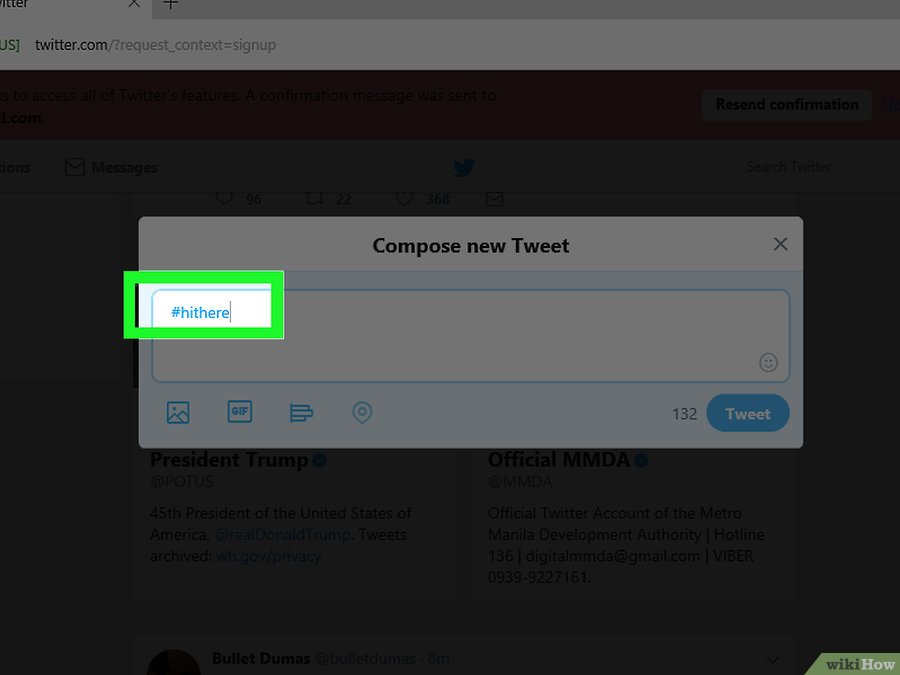

Всё о Twitter
Twitter определение
Тройка лидеров и пять популярных событий
Шесть причин для ретвита и основные факты
История
Устройство
Особенности
Как пользоваться
Правила твиттера
Возможности
Фотографии
Словарь
Карта сайта
Об авторе
Ищите и группируйте людей, которых вы будете читать

1. Посмотрите, кого бы вы хотели читать. Вполне возможно, что вы знаете немало интересных людей, пишущих в Твиттер. Кликните на ссылку “Кого читать” и увидите несколько способов найти людей в Твиттере:
С помощью опции “Найти друзей”, которая покажет вам ваших же знакомых на основе данных ваших учетных записей Gmail, AOL, MSN, Hotmail, Yahoo и так далее.
С помощью рекомендаций Twitter можно найти людей, обладающих общими с вашими интересами. К слову, Твиттер работает над лучшей персонализацией этого списка, так что следите, вдруг да появится новость.
С помощью вкладки “Актуальные темы для вас” можно найти не только интересующие вас темы, но и новых друзей.
2. Поищите коллег или людей из интересных вам организаций. Бизнес, компании, звезды и НКО — все они есть в Твиттере.
3. Создайте списки. Если вы подписываетесь на большое количество человек, сложно будет разгребать все те тонны твитов. Чтобы было легче работать с таким объемом твитов, разбейте их авторов по группам — т.н. “спискам”. Чтобы добавить в список нового человека, перейдите в его профиль, откройте меню и кликните на пункт “Добавить или удалить из списков”. Появится соответствующее меню, из которого можно будет выбрать — добавить ли человека к уже существующему списку или же создать новый. Вам необходимо зафолловить много людей.